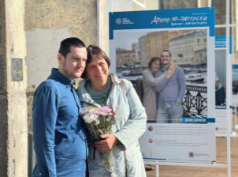
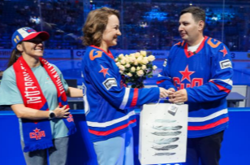

ФОНД «ЦЕНТР РАЗВИТИЯ ДОНОРСТВА КОСТНОГО МОЗГА»
Проект городская фотовыставка «Донор по-питерски. Взрослые тоже чьи-то дети» направлен на популяризацию донорства гемопоэтических стволовых клеток костного мозга, увеличения количества осознанных потенциальных доноров в Федеральном регистре доноров костного мозга, популяризацию и сохранения традиционных семейных ценностей.
В рамках проекта организована фотовыставка, приуроченная ко Всемирному Дню донора костного мозга (21 сентября 2024 года). Участниками фотовыставки стали десять волонтеров — жителей Санкт-Петербурга старше 21 года, которым была проведена трансплантация костного мозга. Портреты сняты в кругу семьи участников фотовыставки и отображать разные семейные ценности и традиции каждой из них. Организация фотовыставки дала аудитории возможность осознать значимость трансплантации костного мозга для взрослых пациентов, учитывая сложности, с которыми они сталкиваются в поиске подходящего донора и привлечении финансовых ресурсов на лечение, поиск и активацию доноров.
С целью популяризации донорства костного мозга организована первая встреча донора и реципиента на хоккейном матче «СКА». Это мероприятие позволило также привлечь потенциальных доноров и увеличить резерв федерального регистра доноров костного мозга.
Реализация проекта позволила популяризировать идею важности и безопасности донорства костного мозга среди жителей Санкт-Петербурга в информационном пространстве, организовать фотовыставку, которую посетили не менее 10 000 человек, провести первую встречу донора и реципиента, которую одновременно увидели не менее 12 000 человек, рекрутировать не менее 100 добровольцев для вступления в Федеральный регистр доноров костного мозга
 Количество благополучателей: 110 человек.
Количество волонтеров: 10 человек.